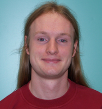

Personal Information
| Name |
Christoph Junghans |
|
 |
Education
| University |
|
| Oct. 2010 |
Dr. rer. nat. (Ph.D.) in Physics, Johannes Gutenberg University of Mainz, Germany |
|
| Nov. 2006 |
Diploma (M.Sc.) in Physics, University of Leipzig, Germany |
|
Minors: Meteorology, Chemistry |
|
| School |
| July 2000 |
Abitur, Gymnasium Brandis, Germany |
|
Majors: Mathematics, Physics |
Work Experience
| July 2018 - Present |
Deputy Group Leader, Applied Computer Science Group, Computer, Computational, and Statistical Sciences Division, Los Alamos National Lab |
| Feb. 2016 - Present |
CNLS Affiliate, Center for Nonlinear Studies, Theoretical Division, Los Alamos National Lab |
| Jan. 2017 - July 2018 |
Deputy Team Leader, Co-Design Team, Computer, Computational, and Statistical Sciences Division, Los Alamos National Lab |
| May 2014 - July 2018 |
Staff Scientist, Computer, Computational, and Statistical Sciences Division, Los Alamos National Lab |
| Mar. 2013 - Apr. 2014 |
Director's Postdoctoral Fellow, Theoretical Division, Los Alamos National Lab |
| Nov. 2011 - Feb. 2013 |
Postdoctoral research assistant, Theoretical Division, Los Alamos National Lab |
| May 2012 - June 2012 |
Member, The Kavli Institute for Theoretical Physics, University of California, Santa Barbara, CA |
| Nov. 2010 - Oct. 2011 |
Postdoctoral research assistant, Polymer Theory Group, Max Planck Institute for Polymer Research, Mainz, Germany |
| Jan. 2007 - Oct. 2010 |
PhD Student, Polymer Theory Group, Max Planck Institute for Polymer Research, Mainz, Germany |
| Jan. 2009 - July 2009 |
Internship as Specialist for Application Performance & Deep Computing, IBM Systems & Technology Group |
| Oct. 2003 - Sep. 2006 |
Student assistant, Institute for Theoretical Physics, University of Leipzig |
| Aug. 2005 - Oct. 2005 |
Visiting students program "Scientific Computing", Jülich Supercomputing Centre, Germany |
| Sep. 2004 |
Student assistant, Institute for Meteorology, University of Leipzig |
| Feb. 2003 - Apr. 2003 |
Service contract, Chair for Fluid Mechanics, Martin Luther University of Halle-Wittenberg, Halle, Germany |
| Mar. 2002 |
Student assistant, Institute for Theoretical Physics, University of Leipzig |
Awards
| Sep. 2017 |
LAAP Award in recognition of outstanding contributions to the ISTI Summer School Program |
| Feb. 2017 |
Postdoc Distinguished Mentor Award, LANL |
| July 2016 |
LAAP Achievement Award in appreciation for active service on the WSST team |
| Jan. 2015 |
Classified as outstanding researcher, USCIS |
| Jan. 2014 |
Most cited article published in EPJE in the past 5 years |
| Mar. 2013 |
Los Alamos National Laboratory Director's Post-Doctoral Fellowship |
| May 2012 |
Member of the Kavli Institute for Theoretical Physics |
| June 2010 |
Participant of 60th Lindau Nobel Laureate Meeting |
| Nov. 2006 |
Diploma with honor (highest possible grade) |
| Nov. 2005 |
Wolfgang Natonek award, University of Leipzig |
| Oct. 2003 |
Teubner award, Department for Physics and Earth Science, University of Leipzig |
| July 2000 |
Book award of the German Physical Society (DPG) for high school graduates |
Open Source Projects
| VOTCA |
Versatile object-oriented toolkit for coarse-graining applications |
Core Developer |
| Gentoo |
Advanced Linux distribution |
Developer |
| Fedora |
Linux distribution |
Contributor |
| OpenSuse |
Linux distribution |
Contributor |
| ESPReSo++ |
Successor of the ESPResSo simulation package |
Developer |
| GroMaCS |
Versatile package to perform molecular dynamics |
Developer (inactive) |
| ESPReSo |
Extensible Simulation Package for Research on Soft matter |
Developer (inactive) |
For more infomation see my GitHub profile and my OpenHUB profile
Professional Skills
Referee for Scientific Journals
- ACS: J. Chem. Inf. Model. & J. Phys. Chem.
- AIP: J. Chem. Phys.
- Elsevier: Comp. Phys. Comm.
- RSC: Phys. Chem. Chem. Phys.
- and others
Code Review
Conferences
Representativ
| July 2015 - June 2016 |
Member of the Worker Safety & Security Team (WSST) for CCS-7 |
| July 2007 - Dec. 2008 |
PhD representative of the theory group, Max Planck Institute for Polymer Research, Mainz |
| Nov. 2007 - Nov. 2008 |
PhD representative of the MPI for Polymer Research |
| Oct. 2002 - Sep. 2005 |
Elected member of student government (Fachschaftsrates) of the Department for Physics and Earth Science, University of Leipzig - Extensive committee work in this period incl. spokesperson, treasurer and member of several faculty/university committees |
Computer Skills
| General |
Linux, AIX, Mac OS, DOS, Windows |
| Programming |
C, Fortran, MPI, OpenMP |
| Scripting |
Shell, awk, Perl, expect, PHP, tcl, Python |
| Markup Languages |
HTML, latex, mediawiki, txt2tags |
Teaching Experience
Teaching Assistant
| Apr. 2008 - Sep. 2008 |
Theoretical physics III, Johannes Gutenberg University of Mainz |
| Oct. 2007 - Mar. 2008 |
Theoretical physics II, Johannes Gutenberg University of Mainz |
| Apr. 2007 - Sep. 2007 |
Theoretical physics I, Johannes Gutenberg University of Mainz |
| Apr. 2006 - Sep. 2006 |
Introduction to computer simulations I, University of Leipzig |
| Sep. 2004 - Oct. 2004 |
Mathematical preparation course for first-year students, University of Leipzig |
Mentoring
| May 2018 - Present |
Postdoctoral research assistant, Los Alamos National Laboratory |
| Feb. 2018 - Present |
Postdoctoral research assistant, Los Alamos National Laboratory |
| Feb. 2017 - Present |
Postdoctoral research assistant, Los Alamos National Laboratory |
| June 2018 - Aug. 2018 |
ECP Summer Student, Los Alamos National Laboratory |
| May 2018 - Aug. 2018 |
Co-Design Summer School (6 Students), Los Alamos National Laboratory |
| May 2018 - Aug. 2018 |
ASC Summer Student, Los Alamos National Laboratory |
| Feb. 2016 - May 2018 |
Postdoc. research assistant (now Staff Scientist), Los Alamos National Laboratory |
| Dec. 2016 - Apr. 2018 |
Postdoc. research assistant (now Staff Scientist), Los Alamos National Laboratory |
| June 2017 - Aug. 2017 |
Highschool Intership Student, Los Alamos National Laboratory |
| Apr. 2017 - June 2017 |
ASC Summer Student, Los Alamos National Laboratory |
| May 2017 - July 2017 |
Data-Science at Scale Summer Student, Los Alamos National Laboratory |
| May 2017 - July 2017 |
Co-Design Summer School (6 Students), Los Alamos National Laboratory |
| May 2015 - May 2017 |
Metropolis Postdoc Fellow (now Staff Scientist), Los Alamos National Laboratory |
| Aug. 2016 - Apr. 2017 |
Postdoc. research assistant (now Staff Scientist), Los Alamos National Laboratory |
| Jul. 2016 - Sep. 2016 |
CNLS Summer Student, Los Alamos National Laboratory |
| Jun. 2016 - Aug. 2016 |
Co-Design Summer School (7 Students), Los Alamos National Laboratory |
| Jul. 2015 - Sep. 2015 |
IC Summer Student, Los Alamos National Laboratory |
| Jun. 2015 - Aug. 2015 |
Co-Design Summer School (6 Students), Los Alamos National Laboratory |
| Jul. 2014 - Sep. 2014 |
CNLS Summer Student, Los Alamos National Laboratory |
| Jun. 2014 - Aug. 2014 |
Co-Design Summer School (6 Students), Los Alamos National Laboratory |
| Jun. 2013 - Aug. 2013 |
Co-Design Summer School (6 Students), Los Alamos National Laboratory |
| Jun. 2010 - Aug. 2010 |
Summer Student, University of Mainz |
| Oct. 2005 - Mar. 2006 |
Simulation methods in generalized ensembles (2 Students), University of Leipzig |
Tutorials (invited)
| Oct. 2016 |
"Coarse-Graining with VOTCA" (Tutorial), CECAM Workshop "Multiscale Simulations of Soft Matter with Hands-On Tutorials on ESPResSo++ and VOTCA", Mainz, Germany |
| May 2016 |
Gitlab Hands-On course, ASC/NGC Program, LANL |
| Oct. 2015 |
"Coarse-Graining with VOTCA" (Tutorial), CECAM Summer School "Simulating Soft and Active Matter with ESPResSo, ESPResSo++ and VOTCA", ICP Stuttgart |
| Sep. 2015 |
Git Hands-On course, ASC/NGC Program, LANL |
| Nov. 2014 |
Git IC Tutorial, Institutional Computing, LANL |
| Oct. 2014 |
Hands-on: VOTCA, CECAM "School on Multiscale Modeling and Use of Espresso++ and VOTCA", Mainz, Germany |
| Aug. 2014 |
Gromacs Tutorial, The Eighth q-bio Summer School, Albuquerque, NM (LA-UR 14-26188) |
| June 2014 |
Gromacs IC Tutorial, Institutional Computing, LANL (LA-UR 14-24814) |
| Oct. 2013 |
"Systematic Coarse-Graining with VOTCA" (Tutorial), CECAM Summer School "Simulating Soft Matter with ESPResSo, ESPResSo++ and VOTCA", ICP Stuttgart |
| July 2013 |
Gromacs Tutorial, The Seventh q-bio Summer School, Santa Fe, NM |
| Oct. 2012 |
"Systematic Coarse-Graining with VOTCA" (Tutorial), CECAM Workshop "Simulating Soft Matter with ESPResSo, ESPResSo++ and VOTCA", ICP Stuttgart |
| July 2012 |
Gromacs Tutorial, The Sixth q-bio Summer School, Santa Fe, NM |
| Oct. 2011 |
Hands-on: VOTCA, CECAM Workshop "Coarse-grained Simulation of Biological Soft Matter Systems using ESPResSo", ICP Stuttgart |
| May 2010 |
Votca Workshop, CSI Darmstadt |
Talks
Colloquium Talks
Invited Talks
| Oct. 2016 |
"Recent developments in VOTCA", CECAM Workshop "Multiscale Simulations of Soft Matter with Hands-On Tutorials on ESPResSo++ and VOTCA", Mainz, Germany |
| Oct. 2015 |
"Recent and Future Developments of VOTCA", CECAM Summer School "Simulating Soft and Active Matter with ESPResSo, ESPResSo++ and VOTCA", ICP Stuttgart |
| Oct. 2014 |
"Introduction to coarse-graining of liquids and soft matter using VOTCA", CECAM "School on Multiscale Modeling and Use of Espresso++ and VOTCA", Mainz, Germany |
| Oct. 2013 |
"Recent and Future Developments of VOTCA", CECAM Summer School "Simulating Soft Matter with ESPResSo, ESPResSo++ and VOTCA", ICP Stuttgart |
| Oct. 2012 |
"Multi-scale modeling using AdResS", CECAM Workshop "Simulating Soft Matter with ESPResSo, ESPResSo++ and VOTCA", ICP Stuttgart |
| June 2012 |
"Molecular Dynamics using Gromacs", Intel EPOCH, Workshop, Portland, OR |
| June 2012 |
"Towards a Unified Framework for Coarse-graining Particle-based Simulations", KITP Conference: "Modeling Soft Matter: Linking Multiple Length and Time Scales", UCSB |
| Oct. 2011 |
"Multi-scale modeling using AdResS", CECAM Workshop "Coarse-grained Simulation of Biological Soft Matter Systems using ESPResSo", ICP Stuttgart |
| Oct. 2010 |
"Multi-scale modeling using AdResS", CECAM Workshop "Simulating Soft Matter with ESPResSo", ICP Stuttgart |
| Nov. 2007 |
"Controlling material properties using a thermostat", CompPhys07, ITP Leipzig |
Seminar Talks (invited)
| Sep. 2018 |
"Co-Design at Los Alamos National Laboratory", University of Reims Champagne-Ardenne |
| June 2017 |
"Parallel Runtime Environments with Cloud Database: Performance Study for HMM with Adaptive Sampling", Nambe Meeting, Los Alamos, NM |
| Oct. 2016 |
"Co-Design at Los Alamos National Laboratory", MPCDF |
| June 2016 |
ASC/NGC Gitlab Tutorial, Parallel Computing Summer Research Internship Program, LANL |
| Sep. 2012 |
"Adaptive Resolution Simulations of C60 in Toluene", Biomolecular Modeling Group, UMD |
| Aug. 2012 |
"Multi-scale Modeling using the Adaptive Resolution Scheme", Sandia National Laboratory, Albuquerque, NM |
| May 2012 |
"Particle-based multi-scale simulations using the Adaptive Resolution Scheme", IBM Research, Almaden |
| May 2012 |
"Coarse-graining Using the VOTCA Package", KITP Program: "Physical Principles of Multiscale Modeling, Analysis and Simulation in Soft Condensed Matter", UCSB |
| July 2011 |
"Locality Analysis via Adaptive Resolution Simulations", DFH-UFA & TKM Seminar, Institut für Theoretische Physik, University of Leipzig |
| June 2011 |
"Versatile object-oriented toolkit for coarse-graining applications", Department of Materials and Environmental Chemistry, Stockholm University |
| Apr. 2011 |
"Adaptive resolution simulations of aqueous solutions", Séminaire de Physique, Biophysique et Physique Statistique, UPV Metz |
| Mar. 2011 |
"Adaptive resolution simulations of water", Theoretical and Computational Biophysics Group, UIUC |
| Mar. 2011 |
"Adaptive resolution simulations of aqueous solutions", Laufer Center for Physical and Quantitative Biology, Stony Brook University |
| Jan. 2011 |
"Versatile object-oriented toolkit for coarse-graining applications", Theoretical and Computational Department Biophysics, MPI-BPC |
| Nov. 2009 |
"Versatile object-oriented toolkit for coarse-graining applications", Computational Biology Cluster Seminar, IFF-2, FZ Jülich |
| July 2009 |
"New HPC libraries for performance improvements", IBM Systems & Technology Group |
| June 2007 |
"Extensions to Dissipative Particle Dynamics", Faculty of Science, Lund University |
Contributed Talks
| Aug. 2017 |
"LAMMPS on CMake", August 2017 LAMMPS Users' Workshop and Symposium, Albuquerque, NM |
| Feb. 2017 |
"Using Asynchronous Runtimes to Support Multiscale Multiphysics On the Trinity Supercomputer" (with R. Pavel), Programming Models and Co-Design Meeting, Livermore, CA |
| Feb. 2016 |
"Tabasco: A realistic multi-scale proxy app for Material science" (with S. Mniszewski), Programming Models and Co-Design Meeting, Los Alamos, NM |
| Feb. 2016 |
"Actually Using Runtimes for Meaningful Computation: Multiphysics, not Fibonacci" (with R. Pavel), Programming Models and Co-Design Meeting, Los Alamos, NM |
| Aug. 2015 |
"Coarse-graining using VOTCA and LAMMPS", August 2015 LAMMPS Users' Workshop and Symposium, Albuquerque, NM |
| May 2015 |
"Parallel Runtime Environments with Cloud Database: Performance Study for HMM with Adaptive Sampling", 13th Annual Workshop on Charm++ and its Applications, Champaign-Urbana |
| Mar. 2014 |
"Discrete Event-based Performance Prediction for Temperature Accelerated Dynamics", APS March Meeting 2014, Denver |
| Sep. 2013 |
"Adaptive Resolution Simulations of C60 in Toluene", Gromacs USA Workshop and Conference, UVA |
| Aug. 2013 |
"Introduction to coarse-graining of liquids and soft matter", August 2013 LAMMPS Users' Workshop and Symposium, Albuquerque, NM |
| Mar. 2013 |
"Recent developments in the VOTCA package for coarse-graining", APS March Meeting 2013, Baltimore |
| Sep. 2012 |
"Multi-scale simulations of fullerenes in aqueous solution employing the Adaptive Resolution Scheme", IWCMM XXII |
| Mar. 2012 |
"Structure formation of toluene around C60: Application of the Adaptive Resolution Scheme", APS March Meeting 2012, Boston |
| Feb. 2012 |
"Local structure formation of toluene around a C60 fullerene: An adaptive resolution study", 25th Annual CSP Workshop, Center for Simulational Physics, University of Georgia |
| Nov. 2009 |
"Versatile object-oriented toolkit for coarse-graining applications", CompPhys09, ITP Leipzig |
| Nov. 2008 |
"Comparative atomistic and coarse-grained study of water: simulation details vs. simulation feasibility", CompPhys08, ITP Leipzig |
| June 2008 |
"Adjusting dynamic material properties by a thermostat", ICMMES 2008, University of Amsterdam |
| Feb. 2008 |
"Controlling material properties using a thermostat", DPG Spring Meeting 2008, Berlin |
Publications
Preprints
- H. V. Guzman, H. Kobayashi, N. Tretyakov, A. C. Fogarty, K. Kreis, J. Krajniak, C. Junghans, K. Kremer, and T. Stuehn,
ESPResSo++ 2.0: Advanced methods for multiscale molecular simulation,
arXiv:1806.10841.
Reviewed Papers
- C. Krekeler, A. Agarwal, C. Junghans, M. Praprotnik, and L. Delle Site,
Adaptive Resolution Molecular Dynamics Technique: Down to the Essential,
J. Chem. Phys. 149, 024104 (2018) [online].
- H. V. Guzman, C. Junghans, K. Kremer, and T. Stuehn,
Scalable and fast heterogeneous molecular simulation with predictive parallelization schemes,
Phys. Rev. E 96, 053311 (2017) [online].
- S. K. Gutierrez, K. Davis, D. Arnold, R. S. Baker, R. W. Robey, P. McCormick, D. Holladay, J. A. Dahl, J. Zerr, F. Weik, and C. Junghans,
Accommodating Thread-Level Heterogeneity in Coupled Parallel Applications,
in: Proceedings of 2017 IEEE International Parallel and Distributed Processing Symposium (IPDPS),
Orlando, FL, USA, 469 (2017) [online].
- C. Junghans, A. Agarwal, and L. Delle Site,
Computational efficiency and Amdahl’s law for the adaptive resolution simulation technique,
Comp. Phys. Comm. 215, 20 (2017) [online].
- T. E. de Oliveira, P. A. Netz, K. Kremer, C. Junghans, and D. Mukherji,
C-IBI: Targeting cumulative coordination within an iterative protocol to derive coarse-grained models of (multi-component) complex fluids,
J. Chem. Phys. 144, 174106 (2016) [online].
- R. S. Pavel, A. L. McPherson, T. C. Germann, and C. Junghans,
Database Assisted Distribution to Improve Fault Tolerance for Multiphysics Applications,
in: Proceedings of the 2nd International Workshop on Hardware-Software Co-Design for High Performance Computing 2015 (Co-HPC '15),
ACM, New York, NY, USA, Article 4 [online].
- S. Y. Mashayak, M. N. Jochum, K. Koschke, N. R. Aluru, V. Rühle, and C. Junghans,
Relative entropy and optimization-driven coarse-graining methods in VOTCA,
PLoS one 10, e131754 (2015) [online].
- S. M. Mniszewski, C. Junghans, A. F. Voter, D. Perez, and S. J. Eidenbenz,
TADSim: Discrete Event-based Performance Prediction for Temperature Accelerated Dynamics,
Trans. Mod. Comp. Sim. 25, 15 (2015) [online].
- D. G. Roehm, R. S. Pavel, K. Barros, B. Rouet-Leduc, A. L. McPherson, T. C. Germann, and C. Junghans,
Distributed Database Kriging for Adaptive Sampling,
Comp. Phys. Comm. 192, 138 (2015) [online].
- S. Bevc, C. Junghans, and M. Praprotnik,

STOCK: Structure Mapper and Online Coarse-Graining Kit for Molecular Simulations,
J. Comp. Chem. 36, 467 (2015) [online] [Homepage].
- C. Junghans, D. Perez and T. Vogel,
Molecular Dynamics in the Multicanonical Ensemble: Equivalence of Wang-Landau Sampling, Statistical Temperature Molecular Dynamics, and Metadynamics,
J. Chem. Theo. Comp. 10, 1843 (2014) [online].
- B. Rouet-Leduc, K. Barros, E. Cieren, V. Elango, C. Junghans, T. Lookman, J. Mohd-Yusof, R. S. Pavel, A. Y. Rivera, D. Roehm, A. L. McPherson, and T. C. Germann,
Spatial adaptive sampling in multiscale simulation,
Comp. Phys. Comm. 185, 1857 (2014) [online].
- A. Nagarajan, C. Junghans and S. Matysiak,
Multiscale simulation of liquid water using a four-to-one mapping for coarse-graining,
J. Chem. Theo. Comp. 9, 5168 (2013) [online].
- S. Bevc, C. Junghans, K. Kremer and M. Praprotnik,

Adaptive resolution simulation of salt solutions,
New J. Phys., 15, 105007 (2013) [online].
- P. Ganguly, D. Mukherji, C. Junghans and N. F. A. van der Vegt,
Kirkwood-Buff coarse-grained force fields for aqueous solutions,
J. Chem. Theo. Comp., 8, 1802 (2012) [online].
- S. Fritsch, S. Poblete, C. Junghans, G. Ciccotti, L. Delle Site and K. Kremer,
Adaptive resolution molecular dynamics simulation through coupling to an internal particle reservoir,
Phys. Rev. Lett. 108, 170602 (2012) [online].
- S. Fritsch, C. Junghans and K. Kremer,
Structure formation of toluene around C60: Implementation of the Adaptive Resolution Scheme (AdResS) into GROMACS,
J. Chem. Theo. Comp. 8, 398 (2012) [online].
- V. Rühle and C. Junghans,
Hybrid approaches to coarse-graining using the VOTCA package: liquid hexane,
Macromol. Theory Simul. 20, 472 (2011) [online].
- C. Junghans, W. Janke and M. Bachmann,
Hierarchies in Nucleation Transitions,
Comp. Phys. Comm. 182, 1937 (2011) [online].
- B. P. Lambeth, Jr., C. Junghans, K. Kremer, C. Clementi, and L. Delle Site,

Communication: On the Locality of Hydrogen Bond Networks at Hydrophobic Interface,
J. Chem. Phys. 133, 221101 (2010) [online].
- C. Junghans and S. Poblete,
A reference implementation of the adaptive resolution scheme in ESPResSo,
Comp. Phys. Comm. 181, 1449 (2010) [online].
- V. Rühle, C. Junghans, A. Lukyanov, K. Kremer and D. Andrienko,
Versatile Object-oriented Toolkit for Coarse-graining Applications,
J. Chem. Theo. Comp. 5, 3211 (2009) [online] [Homepage]
.
- C. Junghans, M. Bachmann and W. Janke,
Statistical Mechanics of Aggregation and Crystallization for Semiflexible Polymers,
Europhys. Lett. 87, 40002 (2009) [online].
- H. Wang, C. Junghans and K. Kremer,
Comparative atomistic and coarse-grained study of water: What do we lose by coarse-graining?,
Euro. Phys. J. E 28, 221 (2009) [online].
"Most cited article published in the journal in the past 5 years" (2014)
- M. Praprotnik, C. Junghans, L. Delle Site and K. Kremer,
Simulation approaches to soft matter: Generic statistical properties vs. chemical details,
Comp. Phys. Comm. 179, 51 (2008) [online].
- C. Junghans, M. Bachmann and W. Janke,
Thermodynamics of Peptide Aggregation Processes: An Analysis from Perspectives of Three Statistical Ensembles,
J. Chem. Phys. 128, 085103 (2008) [online].
- C. Junghans, M. Praprotnik and K. Kremer,
Transport properties controlled by a thermostat: An extended dissipative particle dynamics thermostat,
Soft Matter 4, 156 (2008) [online].
- C. Junghans, M. Bachmann and W. Janke,
Microcanonical Analyses of Peptide Aggregation Processes,
Phys. Rev. Lett. 97, 218103 (2006) [online].
- C. Junghans and U. H. E. Hansmann,
Numerical Comparison of Wang Landau Sampling and Parallel Tempering for Met-enkephalin,
Int. J. Mod. Phys. C 17, 817 (2006) [online].
For more infomation see my ResearcherID profile, my Google Scholar profile, my ORCID profile, my ResearchGate profile or my Impactstory profile.
Theses
- C. Junghans,
Between the Scales: Water from different Perspectives,
PhD Thesis, Johannes Gutenberg-Universität Mainz (2010), Google Books, [online].
- C. Junghans,
Aggregation of Mesoscopic Protein-like Heteropolymers,
Diploma Thesis, Universität Leipzig (2006) [online].
Book Chapters
- L. Delle Site, A. Agarwal, C. Junghans, and H. Wang,
Adaptive Resolution Simulation as a Grand Canonical Molecular Dynamics Scheme: Principles, Applications, Perspectives,
in: C. Clementi (Ed.),
Multiscale Methods in Molecular Biophysics,
Series in Computational Biophysics, CRC Press (2016), ISBN 1482225700 [online].
- E. Apol, R. Apostolov, H.J.C. Berendsen, A. van Buuren, P. Bjelkmar, R. van Drunen, A. Feenstra, S. Fritsch, G. Groenhof, C. Junghans, P. Kasson, P. Larsson, P. Meulenhoff, T. Murtola, S. Pall, S. Pronk, R. Schulz, M. Shirts, A. Sijbers, P. Tieleman, B. Hess, D. van der Spoel, and E. Lindahl,
Gromacs User Manual Version 4.6,
gromacs.org (2013) [online].
- C. Junghans, M. Praprotnik and L. Delle Site,
Adaptive Resolution Schemes,
in: J. Grotendorst, N. Attig, S. Blügel and D. Marx (Eds.),
Multiscale Simulation Methods in Molecular Sciences, NIC Series Vol. 42, Jülich (2009), 359 [online].
Proceedings
- S. Eidenbenz, K. Davis, A. Voter, H. Djidjev, L. Gurvits, C. Junghans, S. Mniszewski, D. Perez, N. Santhi and S. Thulasidasan,
Optimization Principles for Codesign applied to Molecular Dynamics: Design Space Exploration, Performance Prediction, and Optimization Strategies,
in: Proceedings of the DOE ASCR Exascale Research Conference, Portland, OR (2012), [online] (LA-UR 12-20070).
- T. Weidauer, C. Junghans, O. Pauluis, M. Pütz and J. Schumacher,
Shallow Moist Convection,
in: G. Münster, D. Wolf, M. Kremer (Eds.),
NIC Symposium 2010, IAS Series Vol. 3, Jülich (2010), 373 [online].
- C. Junghans, M. Bachmann and W. Janke,
Phase Separation in Peptide Aggregation Processes - Multicanonical Study of a Mesoscopic Model,
in: U. H. E. Hansmann, J. Meinke, S. Mohanty and O. Zimmermann (Eds.),
From Computational Biophysics to Systems Biology 2007, NIC Series Vol. 36, Jülich (2007), 169 [online].
- C. Junghans and U. H. E. Hansmann,
Cross-Check Methods in Protein Simulations,
in: U. H. E. Hansmann, J. Meinke, S. Mohanty and O. Zimmermann (Eds.),
From Computational Biophysics to Systems Biology 2006,
NIC Series Vol. 34, Jülich (2006), 157.
Other Publications
- Balancing the load: Los Alamos researchers develop code to distribute computation more efficiently and across increasing numbers of supercomputer processors.
ASCR Discovery Story, May 2018, HPCwire and insideHPC
- C. Junghans, A. K. Hüttel and U. Müller,
Gentoo Linux: Quelltexte und Rolling Releases,
c't Magazin 16, 162 (2012).
- C. Junghans,
The Method of Multicanonical Simulations in Different Models,
Technical Report, Universität Leipzig (2005), [online].
- C. Junghans,
Modern Methods in Protein Simulations,
in: R. Esser(Ed.), Technical Report IB-2005-13,
John von Neumann Institute for Computing, Jülich (2005), 83 [online].